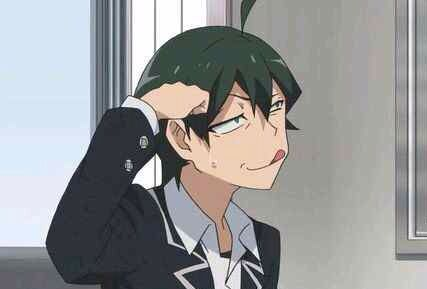
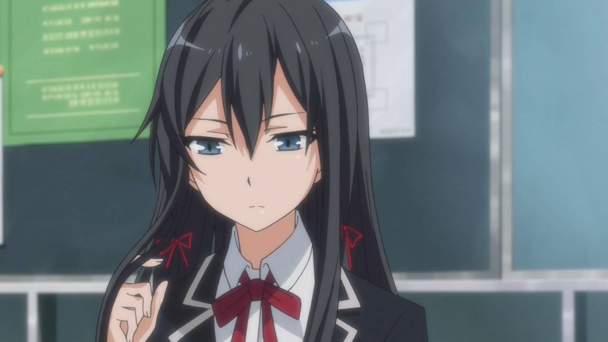
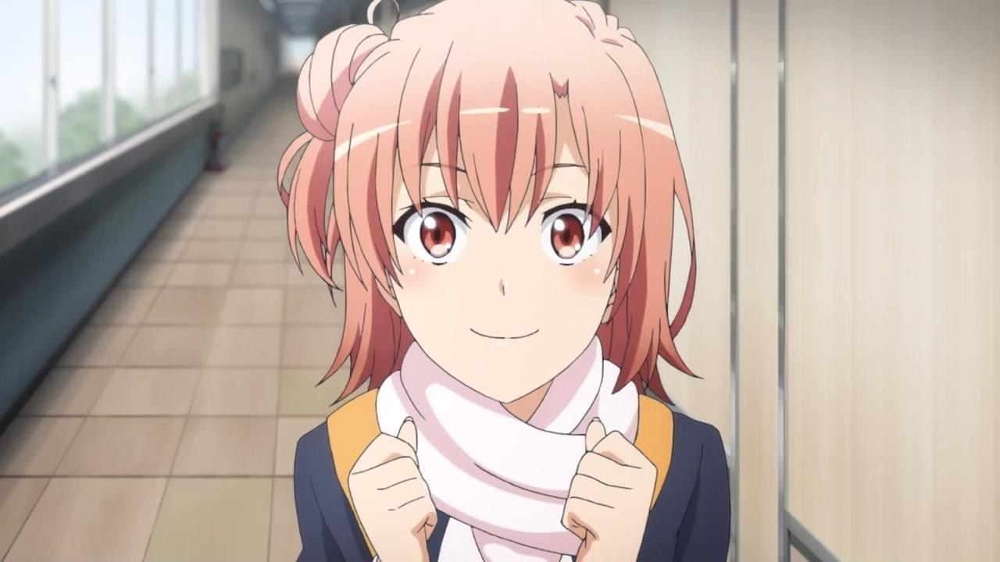
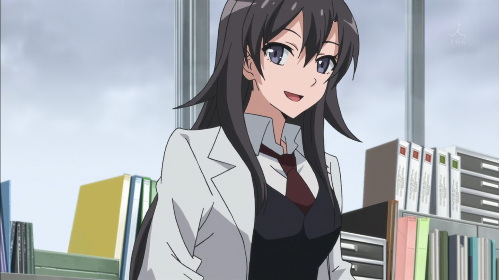
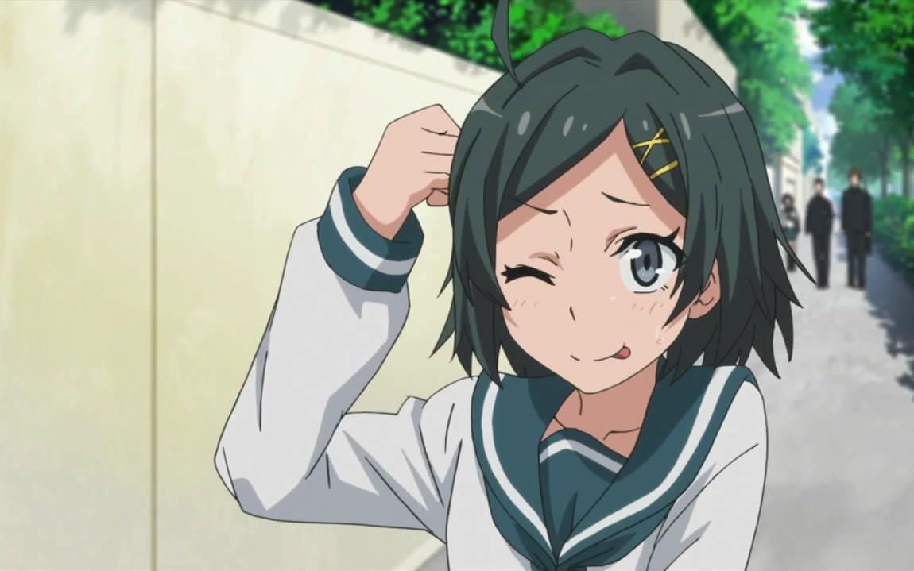

比企谷八幡

侍奉社社員，就讀總武高中2年F班，出席序號29。17歲，生日8月8日，獅子座，A型。喜歡的食物是蜂蜜炒花生及Max咖啡。興趣是閱讀、玩遊戲、看動畫。特技是思考、猜謎、腦筋急轉彎、自言自語、模仿、隱身、人類觀察。座右銘是「強求不來就放棄。」
外貌特徵有呆毛和死魚眼。另一方面，由於存在感太弱，姓氏被班上大多數人記成「比企鵝」，。
是一個十分愛好千葉的千葉人。理想職業第一是當家庭主夫從而避免成為父母那樣的「社畜」，第二則是上班族。文科成績極佳，故事的前期常常引用某些知名作家的名言（宫澤賢治、夏目漱石、太宰治等），在文科的總分是全級第三（年級第一則是雪之下雪乃，年級第二為葉山隼人）；理科及美術則不甚突出，數學更是極差，只得9分位列全級最低，連簡單的乘除法心算都做不到。且因成績只會告知本人不會公開，完全與外界隔絕的八幡，其成績完全無人知曉。
雪之下雪乃

侍奉社社長，總武高中2年J班（國際教養班）。17歲，生日1月3日，摩羯座，B型。喜歡的食物是龍蝦和紅茶。
十全十美的美少女，各方面都擁有極出色的天賦，唯獨因訓練不足而欠缺基礎體力。喜歡貓而且喜歡吃貓食但害怕狗，除此之外疑似還有路痴的特質，拿主題樂園中激烈的遊樂設施沒輒。對任何人都很冷漠，尤其排斥和她共有著某些過去的葉山，在之後真心地把由比濱視為朋友，在八幡看來非常「溺愛」由比濱，很難拒絕由比濱的各種請求。
此外，在比較了解雪之下的葉山的第三者角度看來，雪之下是很親近比企谷的。各方面都和比企谷很相似，但兩人孤獨的本質並不一樣，家中情況也不同，因此和八幡有很多細節上的差異；如雪乃實際上是被班上的女同學們所崇拜著，以及雪乃仍然會親近非常特定的人。
和比企谷一樣看不慣人際關係間的欺瞞，但不同於比企谷的得過且過，嚴格地以此律己，事事要求坦承。雪之下初次看到八幡應是在雪之下搭乘自家的豪華轎車和八幡發生車禍那時，騎自行車的八幡因此救了由比濱的狗，但在侍奉社社辦見到八幡時，雪之下卻表示自己從未見過八幡。
由比濱結衣

侍奉社社員，總武高中2年F班，八幡的同學。17歲，生日6月18日，雙子座，O型。
愛吃甜食，料理非常差。但樣貌和身材都很出色，但發言欠缺警覺（會在不注意的情況下掀開別人的心理創傷）。雖然各方面有點天然呆，不過其實非常善於看人臉色，也常常順伏眾人的氣氛做事；美中不足的是有些時侯無法理解人際關係的「蝴蝶效應」，以及朋友內心的矛盾。衷心希望和自己崇拜的雪之下做朋友，曾發生為保護雪之下而動怒的反常行為（可發現雪之下於她內心的地位）。太而言，她是自己所接觸的人當中最正常的一個。雖喜歡空太，但是不太敢坦率地表達出來，常以傲嬌的態度面對。
平塚静

侍奉社和學生會的顧問。總武高中的國語教師，也負責擔任生活指導老師。生日不詳，年齡不詳，A型。
專長是格鬥技，常用來對付八幡。喜歡吃肉、喝啤酒、抽菸、看漫畫、開車兜風、說些過時的neta，因而這些neta被八幡理解時會非常興奮。對有關年齡和未婚的話題相當感冒，但卻常常在對話中不小心透露出自己的年紀跟未婚的事實。有時被稱為「靜可愛（しずか-わい）」。
雖然常對八幡暴力相向，但實際上卻非常關心他，同時也非常的溫柔，只是不常表現出來。強迫八幡加入侍奉社，才有了本作的故事。在輕小說的第1卷第3章中，被八幡形容為「胸部像大人，性格卻像小孩」。八幡曾表示「沒選擇你的人完全是沒眼光」，這使得平塚靜本人害羞臉紅。
比企谷小町

八幡的妹妹，與八幡一樣有呆毛。故事開始時是初中3年級的學生，故事後期已升入總武高中就讀。15歲，3月3日生，雙魚座，O型。愛吃肉。
在感情上是比企谷八幡的助推器，在家中擔任著為兄長排憂解難的角色，偶爾也會與八幡吵架，但很快又會和好，小時候回家時常常家裡都沒有人，因此離家出走，後來被八幡找到，從此之後八幡就比小町早到家；然而其實是八幡沒有朋友，放學後無事可做就直接回家之故。